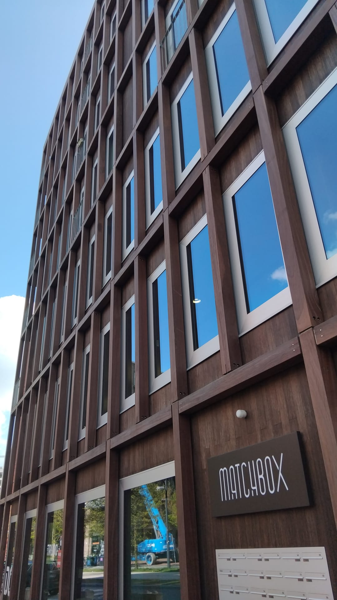
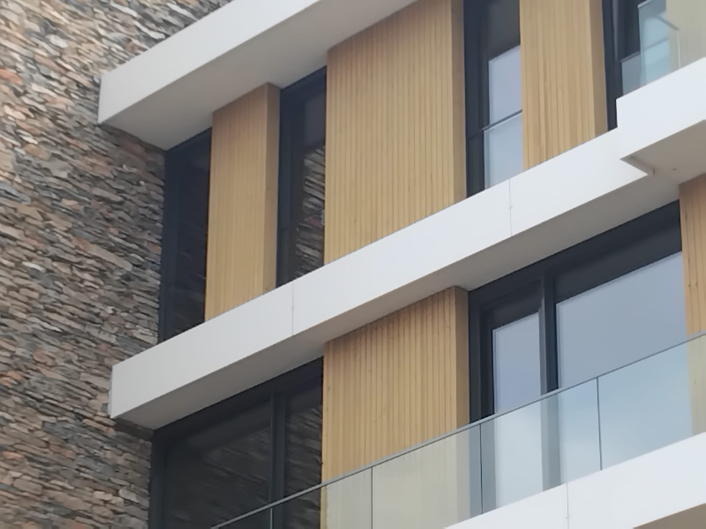
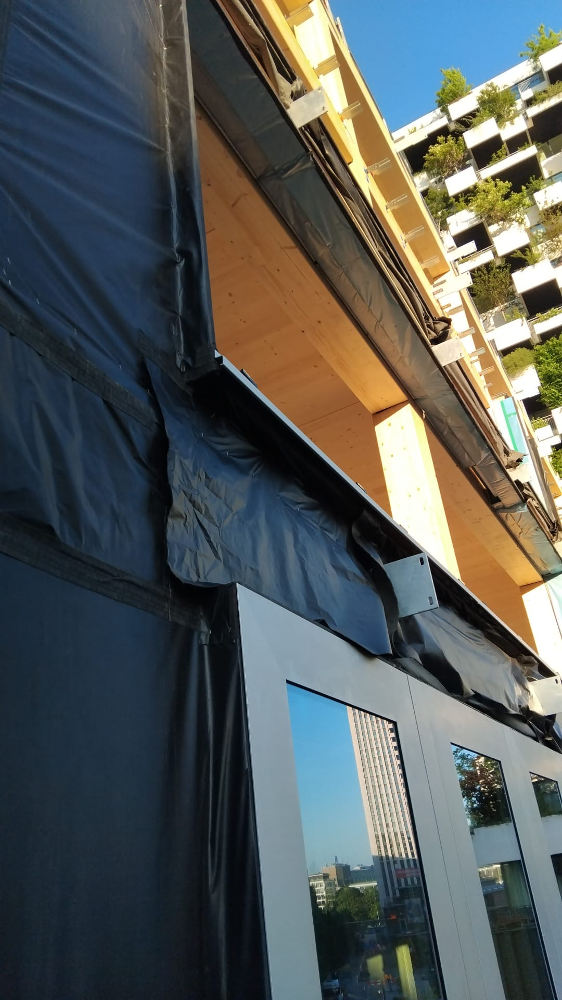
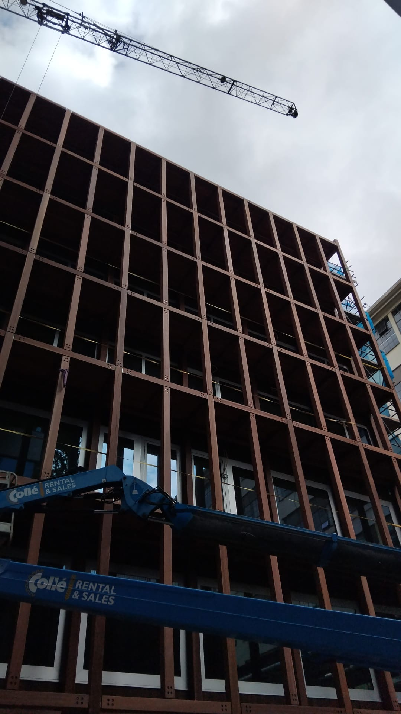

Usually it is work where fit, connections and neat visible finishing matter straight away.
- Prefab installation Wall and roof elements that need to fit tightly.
- Frames and facades Transitions that need to work technically and look clean.
Timberwork across the Netherlands
I come from broad construction work in Poland. In the Netherlands I have spent more than 5 years focusing on timberwork: timber structures, prefab wall and roof elements, frames, sloped roofs and facade finishing in timber-look systems, HPL, Rockpanel and composite.

Usually it is work where fit, connections and neat visible finishing matter straight away.
What I do
Mainly on the parts where fit, dimensions and visible finish matter most.
From separate timber parts to larger built-up elements that need exact fit on site.
Installation of frames and openings where lines and edge finishing stay visible.
HPL, Rockpanel, composite and timber-look facades with attention to fixing and detail.
Background
In Poland I worked on complete finishing and own projects: room layouts, demolition, drywall, ceilings, painting, floors, windows, doors and installation work. That base still helps today, even though the current focus is fully on timberwork.

Project in view
The images from 's-Hertogenbosch show the facade, but also the build-up, the frame connections and the assembly stage behind it.



Worked with
New projects
If you need someone for prefab, frames, timber structure or facade finishing, you can contact me directly.